n8n
Què és n8n?
n8n (pronunciat "n-eight-n") és una ferramenta d'automatització de fluxos de treball (workflow automation) de codi obert que permet connectar diferents serveis i aplicacions per automatitzar tasques repetitives. L'eina utilitza una interfície visual on els usuaris poden crear fluxos de treball mitjançant la connexió de nodes, sense necessitat de programar codi complex. En eixe sentit és prou semblant a Node-RED, que ja hem vist a classe.
Filosofia i característiques
n8n es fonamenta en tres pilars:
-
Codi obert: El projecte és completament obert, permetent que qualsevol puga contribuir amb millores. La versió gratuïta inclou la majoria de funcionalitats.
-
Flexibilitat: Es pot utilitzar de tres maneres diferents:
- Cloud: Servei allotjat per n8n.io, amb plans gratuïts i de pagament
- Self-hosted: Instal·lació pròpia amb Docker o npm
-
Desktop: Aplicació per a Windows, Mac i Linux
-
IA nativa: Des de la versió 1.0, n8n incorpora nodes específics per treballar amb models d'IA com Claude, GPT-4 o Gemini, permetent crear agents intel·ligents.
Comparativa amb Node-RED
Com hem comentat, n8n és un producte similar a Node-RED pel que fa a la forma de treballar. La taula següent mostra les diferències principals:
| Característica | n8n | Node-RED |
|---|---|---|
| Llicència | Apache 2.0 | Apache 2.0 |
| Interfície | Més polida, similar a disseny modern | Funcional però més austera |
| Integració IA | Nativa amb nodes específics | Requereix nodes externs |
| Focus principal | Integració de serveis, API | IoT, sensors |
| Preu | Gratuït (self-hosted) | Totalment gratuït |
| Escalabilitat | Workers per a alta càrrega | Limitada |
| Gestió d'errors | Error workflows centralitzats | Nodes catch |
| Sub-workflows | Execute Workflow natiu | Link nodes |
Casos d'ús principals
n8n s'utilitza habitualment per a:
- Integració d'aplicacions: Connectar serveis com Salesforce amb Slack, o Gmail amb Google Sheets
- Automatització de processos: Notificar equips quan es rep un formulari web
- ETL (Extract, Transform, Load): Migrar dades entre sistemes diferents
- Monitorització: Alertar d'incidències detectades automàticament
- Chatbots: Crear respostes automàtiques amb IA
- Processament de dades: Analitzar, filtrar i transformar dades de sensors o APIs
Instal·lació i Configuració
Requisits previs
Per instal·lar n8n amb Docker, necessiteu:
- Docker instal·lat i en execució
- Docker Compose (o usar
docker composesense guions) - Com a mínim 2 GB de RAM
- 5 GB d'espai en disc
Instal·lació amb Docker Compose
Podem incloure n8n en el nostre entorn Docker afegint el següent servei a un fitxer docker-compose.yml:
n8n:
image: docker.n8n.io/n8nio/n8n:latest
container_name: n8n
restart: unless-stopped
ports:
- "5678:5678"
environment:
- GENERIC_TIMEZONE=Europe/Madrid
- TZ=Europe/Madrid
- N8N_ENFORCE_SETTINGS_FILE_PERMISSIONS=true
- N8N_RUNNERS_ENABLED=true
- N8N_ENCRYPTION_KEY=POSEU_UNA_CLAU_SEGURA_64_CARÀCTERS
volumes:
- n8n_storage:/home/node/.n8n
Com sempre, si volem utilitzar n8n juntament amb altres serveis que tenim dockeritzats caldrá incloure'ls tots en la mateixa xarxa.
En Aules teniu un docker-compose preparat amb n8n, Kafka, Elasticsearch i Kibana. Podeu utilitzar-lo com a base per a les vostres pràctiques.
Variables d'entorn importants
| Variable | Descripció | Requerit |
|---|---|---|
N8N_ENCRYPTION_KEY |
Clau de 64 caràcters per xifrar credencials | Sí |
GENERIC_TIMEZONE |
Zona horària per defecte | No |
N8N_RUNNERS_ENABLED |
Habilita executors d'IA | No |
WEBHOOK_URL |
URL pública per a webhooks (producció) | No |
EXECUTIONS_MODE |
regular o queue |
No |
N8N_LOG_LEVEL |
Nivell de log: debug, info, warn, error | No |
Generar una clau d'encriptació
Executeu esta comanda per generar una clau segura:
openssl rand -hex 32
El resultat serà una cadena de 64 caràcters hexadecimals que podeu copiar a la variable N8N_ENCRYPTION_KEY.
Accés a n8n
- Inicieu els serveis amb
docker-compose up -d - Obriu el navegador a
http://localhost:5678 - La primera vegada us demanarà crear un usuari i contrasenya
- Un cop creat, podreu veure el canvas principal

Interfície d'Usuari
L'editor visual de n8n és on es dissenyen i modifiquen els fluxos de treball. Es tracta d'un canvas interactiu on podeu arrossegar, connectar i configurar nodes.
Elements de la interfície
La interfície es divideix en les següents zones:
- Canvas (centre): Àrea principal on es visualitzen i editen els nodes
- Panell de nodes (esquerra): Cercador i llista de nodes disponibles
- Panell de configuració (dreta): Propietats del node seleccionat
- Barra superior: Accions generals (executar, guardar, compartir)
- Barra inferior: Informació de l'estat i execucions recents
Navegació pel canvas
| Acció | Ratolí | Teclat |
|---|---|---|
| Moure el canvas | Clic mig + arrastrar | - |
| Zoom | Rodeta del ratolí | Ctrl + + / Ctrl + - |
| Seleccionar node | Clic simple | Tab per navegar |
| Seleccionar múltiples | Shift + clic |
- |
| Moure nodes | Arrosegar | Fletxes |
Afegir nodes al canvas
- Feu clic al botó + blau o polseu
Ctrl + A - Es mostrarà el cercador de nodes
- Escriviu el nom del node o navegueu per categories
- Feu clic per afegir-lo al canvas
Elements principals de n8n
n8n utilitza quatre elements fonamentals per construir fluxos de treball:
Triggers (Disparadors)
En n8n tenim nodes que inicien el flux de treball, nodes que executen accions, que se connecten a altres aplicacions, que treballen amb agents IA, etc.
Un trigger és el node inicial que inicia l'execució del flux. Sense trigger, un workflow no s'executarà mai automàticament.
Tipus de triggers: - Manual: S'executa quan se fa clic en un botó - Schedule: S'executa segons una planificació (cron) - Webhook: S'executa en rebre una petició HTTP - App Event: S'activa per esdeveniments d'aplicacions (Gmail, Telegram, etc.) - Form: S'executa quan un usuari ompli un formulari

Manual Trigger
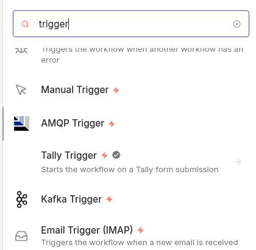
El trigger manual és el més senzill. Permet executar el flux fent clic en un botó des de la interfície de n8n.
Utilització:
- Provar fluxos en desenvolupament
- Fluxos que es volen executar sota demanda
- Integració amb altres workflows via "Execute Workflow"
Configuració:
- Afegiu el node "Manual Trigger"
- El node no té opcions de configuració
- Feu clic a "Test workflow" per executar
Lògicament, si el node disparador no va enganxat a nodes d'acció, no farà res.
Schedule Trigger
Permet executar el flux de manera periòdica segons una planificació. Funciona per regles cron o intervals fixos.
En esta captura de pantalla podeu veure un Trigger Schedule configurat per executar-se cada 30 segons. També es pot configurar per executar-se cada dia a una hora concreta, o cada setmana, etc. Per a expressions cron, en Trigger interval hem de seleccionar Custom (Cron).
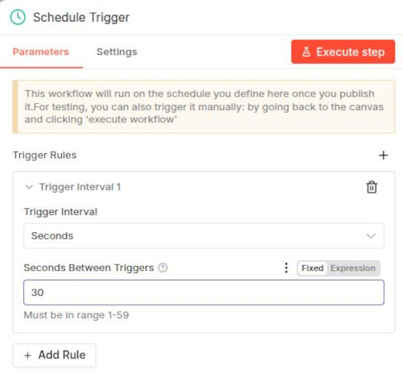
Utilització:
- Tasques de manteniment diàries
- Sincronització de dades cada cert temps
- Reports programats
Configuració:
| Paràmetre | Descripció | Exemple |
|---|---|---|
| Rule | Expressió cron o interval | 0 * * * * |
| Timezone | Zona horària | Europe/Madrid |
Formats de planificació:
- Interval fix: Executa cada X temps
-
Cada minut, hora, dia, setmana, mes
-
Expressió Cron: Més control sobre el temps
0 9 * * 1-5→ Dilluns a divendres a les 9:00*/15 * * * *→ Cada 15 minuts0 0 1 * *→ Primer dia de cada mes
Eines per construir expressions cron:
- Crontab.guru - Permet visualitzar expressions cron
Webhook Trigger
Permet iniciar el flux quan arriba una petició HTTP a una URL específica (que genera el propi node Webhook). És ideal per integrar amb serveis externs.
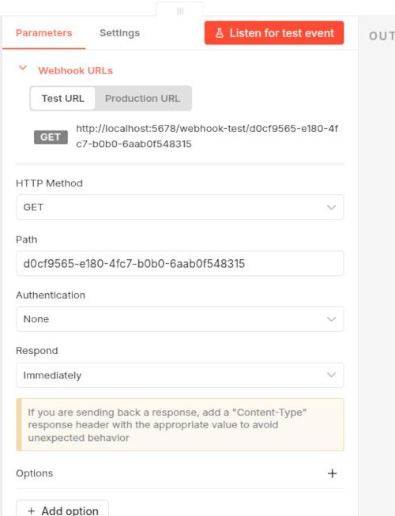
Utilització:
- Rebre notificacions de serveis externs
- Crear APIs personalitzades
- Integració amb formularis web
- Webhooks de GitHub, Stripe, etc.
Configuració:
| Paràmetre | Descripció |
|---|---|
| Path | Camí de la URL |
| HTTP Method | GET, POST, PUT, DELETE, etc. |
| Response Mode | Quan retornar la resposta |
| Response Data | Dades a retornar |
URL del Webhook:
Quan afegiu un Webhook Trigger, n8n genera una URL única. Per exemple (en test):
http://localhost:5678/webhook-test/5ab28b3a-22fb-4204-9c56-4f60b835b95a
Quan enviem una petició a eixa URL, el flux s'executarà.
Hi ha diferents modes de resposta: immediately (respon tan aviat com arriba la petició), when last node finishes (espera que l'últim node acabe i retorna la seua eixida), using Respond to Webhook node (la resposta està definida en un node Respond to webhook) o streaming (torna dades en temps real). També podem configurar les dades que volem retornar en la resposta (add option).
És molt senzill fer una prova. Podeu crear un node Webhook en tots els valors per defecte (HTTP method GET), poseu-lo en modo listening, preneu nota de la URL que genera i feu una petició des del navegador o amb curl. Veure la resposta predefinida:
{"message":"Workflow has started"}
A classe veurem algun exemple senzill.
App Event Triggers
Els triggers d'aplicacions permeten iniciar el flux quan passa un esdeveniment en un servei extern. Hi ha molts, si vols veure'ls tecleja Trigger en el cercador de nodes que hi ha a la dreta del canvas.
Alguns triggers d'aplicació disponibles són:
| Aplicació | Esdeveniments |
|---|---|
| Gmail | Nou email, email etiquetat |
| Telegram | Nou missatge, callback query |
| Slack | Nou missatge, reaccions |
| GitHub | Push, PR, issue, release |
| Notion | Pàgina creada, actualitzada |
| Stripe | Pagament rebut, client nou |
| Shopify | Comanda rebuda, producte actualitzat |
| Airtable | Registre creat, modificat |
Configuració general:
- Afegiu el trigger de l'aplicació
- Autenticació amb credencials (API key, OAuth, etc.)
- Seleccioneu l'esdeveniment a escoltar
- Configureu filtres opcionals
Form Trigger
Permet crear formularis web que inicien el flux quan un usuari els envia.
Tipus de camps:
| Tipus | Descripció |
|---|---|
| Text | Camp de text curt |
| Textarea | Camp de text llarg |
| Number | Camp numèric |
| Date | Selector de data |
| Select | Llista desplegable |
| Multi-select | Selecció múltiple |
| File | Càrrega de fitxers |
Configuració:
- Afegiu el Form Trigger
- Afegiu camps amb el botó "Add Field"
- Configureu cada camp (nom, tipus, requerit, etc.)
- Personalitzeu el formulari (títol, descripció)
URL del formulari:
El formulari estarà accessible a:
https://seu-n8n.io/form/{id-workflow}
Comproveu que la url és correcta, en alguns casos el domini pot ser diferent
Nodes
Els nodes són blocs que realitzen operacions específiques. Cada node:
- Rep dades d'entrada (o les genera)
- Processa les dades
- Produeix dades de sortida
Categories de nodes:
- Core: Nodes bàsics inclosos amb n8n
- App: Nodes per a aplicacions externes (Slack, Gmail, etc.)
- AI: Nodes per a integració amb models d'IA
El workflow comença amb un trigger. Per exemple, podem crear un trigger manual (això implica que el flux de treball el llançarem manualment). Si ara fem clic en el botó + que té a la dreta, ens demanarà si volem afegir un altre node. Apareixerà un buscador i podem triar quin node volem afegir.

Connexions
Les connexions lliguen nodes entre si, permetent que les dades passen d'un node a un altre. Cada node pot tindre múltiples connexions d'eixida.
A n8n, les dades es passen entre nodes en format JSON. Cada execució genera un o més items (elements) que contenen:
- json: Dades estructurades en format clau-valor
- binary: Dades binaries (fitxers, imatges, etc.) - opcional
{
"json": {
"nom": "Maria",
"email": "maria@example.com",
"edat": 25
},
"binary": {}
}
Els nodes que estan connectats entre sí tenen un INPUT (informació que arriba del node anterior) i un OUTPUT (informació que s'envia al node següent). Eixa informació està disponible en edició si feu clic sobre un node qualsevol. A l'esquerra del canvas apareix l'input, i la dreta l'output.
Credencials
Les credencials guarden de forma segura les claus d'API, tokens i contrasenyes necessàries per autenticar-se a serveis externs.
El panell d'execució
Quan executeu un flux manualment, el panell d'execució mostra el resultat de cada node. Això és molt útil per:
- Veure quines dades produeix cada node
- Identificar errors
- Depurar el flux
Podeu accedir a les execucions en la part superior del canvas, en l'opció Executions.
Des del panell d'execució podeu veure a l'esquerra totes les execucions recents. En el canvas podeu fer clic en un node i veure les dades d'entrada i eixida d'eixe node en particular. Això és molt útil per depurar i entendre com flueixen les dades.
En la part inferior, fent clic en logs, se veu més informació sobre l'execució de cada node que seleccionem.
Fent clic en una execució també veiem les dades corresponents (input i output dels nodes que seleccionem). Això és especialment útil si utilitzem un Schedule Trigger que envie dades cada x temps. En la llista d'execucions podem veure si s'està executant periòdicament o no, i el resultat de cada execució.
Si volem executar tot el flux, farem sempre clic en el botó Execute workflow. Hem de tindre en compte que no podem tindre dos workflows en el mateix canvas. Pot funcionar bé en alguns casos, però en altres no. Si tenim dos workflows en 2 canvas diferents i volem que continuen executant-se quan eixim d'un canvas i anem a l'altre, els haurem de posar en producció (botó Publish en la part superior del canvas).
Executar nodes individuals
Podeu executar un node específic sense executar tot el flux:
- Seleccioneu el node fent doble clic.
- Feu clic a Execute step (nom del node → Test step)
- S'executarà només este node
Com hem comentat abans, a l'esquerra del panell podem veure l'input del node que estem executant, i a la dreta el seu output.
Organització del canvas
Per millorar la llegibilitat dels fluxos complexos:
- Sticky Notes: Afegiu notes adhesives amb
Shift + N - Tags: Assigneu tags als workflows per organitzar-los
- Alineació: Seleccioneu múltiples nodes i useu les opcions d'alineació
- Colors: Podeu assignar colors als nodes per categories
Dreceres de teclat generals
| Acció | Drecera |
|---|---|
| Guardar workflow | Ctrl + S |
| Executar workflow | Ctrl + Enter |
| Tancar editor | Esc |
| Obrir cercador de nodes | Ctrl + A |
| Cercar workflow | Ctrl + F |
| Desfer | Ctrl + Z |
| Refer | Ctrl + Shift + Z |
Dreceres de teclat del canvas
| Acció | Drecera |
|---|---|
| Zoom in | Ctrl + + |
| Zoom out | Ctrl + - |
| Zoom reset | Ctrl + 0 |
| Seleccionar tots | Ctrl + A |
| Copiar | Ctrl + C |
| Enganxar | Ctrl + V |
| Eliminar seleccionat | Supr |
| Duplicar | Ctrl + D |
| Afegir sticky note | Shift + N |
Navegació
| Acció | Drecera |
|---|---|
| Següent node | Tab |
| Node anterior | Shift + Tab |
| Obrir configuració | Enter |
| Tancar configuració | Esc |
Dades i Expressions
Anem a veure algunes estructures de dades i expressions que podem utilitzar en n8n.
Items i JSON
A n8n, les dades flueixen com a items. Cada item conté:
{
"json": {
"id": 1,
"nom": "Maria",
"email": "maria@example.com"
},
"binary": {}
}
Arrays
Els arrays contenen múltiples elements:
[
{ "json": { "id": 1 } },
{ "json": { "id": 2 } },
{ "json": { "id": 3 } }
]
Dades niuades
Els objectes poden contindre objectes o arrays:
{
"json": {
"usuari": {
"nom": "Joan",
"adreca": {
"carrer": "Carrer Major",
"ciutat": "València"
}
},
"comandes": [
{ "id": 1, "producte": "Llibre" },
{ "id": 2, "producte": "Bolígraf" }
]
}
}
Expressions
Les expressions permeten accedir i manipular dades dinàmicament.
Sintaxi
Les expressions s'escriuen entre {{ }}:
{{ $json.camp }}
{{ $json.usuari.nom }}
{{ $vars.variable }}
{{ $node "NodeName" }}
Variables especials
| Variable | Descripció |
|---|---|
$json |
Dades JSON de l'item actual |
$input |
Tots els items d'entrada |
$node |
Dades d'un node específic |
$vars |
Variables de workflow |
$execution |
Dades de l'execució actual |
$parameter |
Paràmetres del node |
$workflow |
Propietats del workflow |
$now |
Data/hora actual |
$today |
Data d'avui |
$json.meuCamp || "valorPerDefecte" |
Valor per defecte |
Funcions útils
Strings:
{{ $json.nom.toUpperCase() }} // Majúscules
{{ $json.nom.toLowerCase() }} // Minúscules
{{ $json.email.split('@')[0] }} // Part abans de @
{{ $json.nom.trim() }} // Eliminar espais
{{ $json.nom.length }} // Longitud
{{ $json.nom.includes('test') }} // Conté 'test'
Dates (Luxon):
{{ $now.toISO() }} // ISO 8601
{{ $now.toFormat('dd/MM/yyyy') }} // Format dia/mes/any
{{ $now.minus({ days: 7 }).toISO() }} // Fa 7 dies
{{ $now.plus({ hours: 2 }).toFormat('HH:mm') }} // D'aquí 2 hores
Arrays:
{{ $json.elements[0] }} // Primer element
{{ $json.elements.length }} // Nombre d'elements
{{ $json.elements.join(', ') }} // Unir elements
Condicionals:
{{ $json.edat >= 18 ? 'Adult' : 'Menor' }}
Convertir tipus
Amb el node Code (el veure més endavant, és un node que permet executar codi):
// String a number
parseInt($json.edat, 10)
// Number a string
String($json.id)
// String a boolean
$json.actiu === 'si' || $json.actiu === true
// String a data
new Date($json.data).toISOString()
Aplanar objectes
// Aplanar objecte niuat
const aplanat = {};
for (const [clau, valor] of Object.entries($input.first().json)) {
if (typeof valor === 'object' && valor !== null) {
for (const [subclau, subvalor] of Object.entries(valor)) {
aplanat[`${clau}_${subclau}`] = subvalor;
}
} else {
aplanat[clau] = valor;
}
}
return { json: aplanat };
Nodes core
Hi ha molts tipus de nodes i moltes opcions per crear fluxos de treball. No és factible anar veient tots els nodes un a un, així que intentarem familiaritzar-nos amb alguns dels més utilitzats.
Code Node
El node Code permet executar codi JavaScript (o Python) personalitzat per transformar dades.
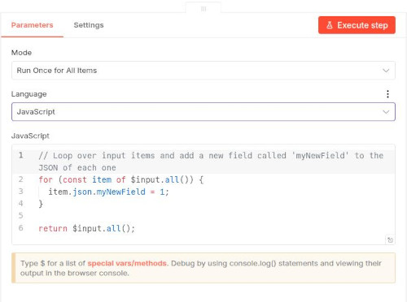
En l'apartat Mode per defecte tenim Run once for all items. Això vol dir que el node amb el codi s'executarà una vegada només quan li arriba l'input. Si en l'input hi arriben molts valors, i volem que el codi s'execute per cada un d'ells, seleccionarem l'opció Run once for each item. En este cas, el codi s'executarà una vegada per cada item que arribe a l'input.
// Les dades d'entrada estan a items
const dades = $input.all();
return dades.map(item => ({
json: {
// Modifiqueu les dades ací
nouCamp: item.json.camp * 2,
processat: true
}
}));
Penseu en els nodes Code de n8n com si foren els nodes Function de Node-RED.
Accés a les dades de l'input
| Variable | Descripció |
|---|---|
$input.all() |
Tots els items d'entrada |
$input.first() |
Primer item |
$input.last() |
Últim item |
$node("NomNode") |
Dades d'un node específic |
$json |
Item actual (sintaxi curta) |
Casos pràctics de Code
Exemple 1: Transformar dades
// Afegir camps calculats
return $input.all().map(item => ({
json: {
nom: item.json.nom,
email: item.json.email.toLowerCase(),
data_creacio: new Date().toISOString(),
hash: require('crypto')
.createHash('md5')
.update(item.json.email)
.digest('hex')
}
}));
Exemple 2: Filtrar dades
// Filtrar només majors d'edat
return $input.all().map(item => {
if (item.json.edat >= 18) {
return { json: item.json };
}
}).filter(item => item !== undefined);
Exemple 3: Agrupar dades
// Agrupar per categoria
const grups = {};
for (const item of $input.all()) {
const cat = item.json.categoria;
if (!grups[cat]) grups[cat] = [];
grups[cat].push(item.json);
}
return Object.entries(grups).map(([categoria, items]) => ({
json: { categoria, quantitat: items.length, items }
}));
Llibreries disponibles
Podeu utilitzar els següents mòduls de Node.js:
// Crypto
const crypto = require('crypto');
// Date/Time
const avui = new Date();
const faUnaSetmana = new Date(Date.now() - 7 * 24 * 60 * 60 * 1000);
// Utils
const _ = require('lodash'); // Si està disponible
Set Node
El node Set permet assignar valors a camps nous o existents sense haver d'escriure codi en JavaScript / Python. És molt útil per a transformacions senzilles. Podem crear els camps en format JSON, o anar definint-los un a un.
Modes d'operació
| Mode | Descripció |
|---|---|
| Keep Only Set | Elimina tots els camps excepte els especificats |
| Set All | Assigna valors a camps específics (no elimina els altres) |
Assignar valors
Podeu assignar:
Valors fixos:
nom: "Joan"
actiu: true
quantitat: 42
Recordeu que els valors fixos poden afegir-se d'un en un, o en format JSON. Si seleccionen l'opció
Manual Mappingels anirem afegint d'un en un en el requadre que podem veure en la imatge següent.
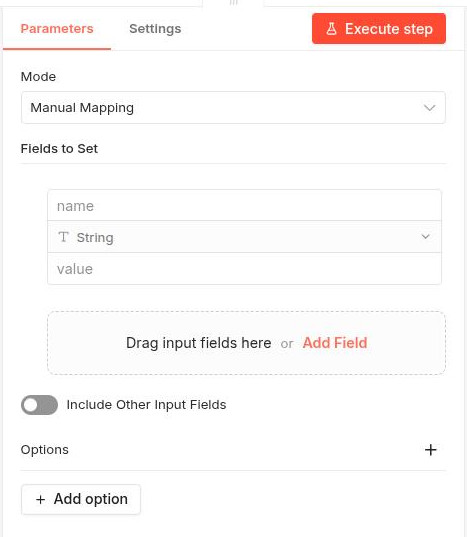
Expressions (dinàmiques):
Per assignar valors basats en expressions, hem de fer clic en el botó Expression que hi ha a la dreta del quadre de text Value. Per definir expressions utilitzarem la sintaxi {{ }}. Per exemple:
{{ $json.camp }} // Valor d'un camp
{{ $now.toISO() }} // Data actual
{{ $vars.variable }} // Variable de workflow
Filter Node
El node Filter permet filtrar elements segons condicions. Les condicions s'aniran afegint una a una tal com se veu en la imatge.
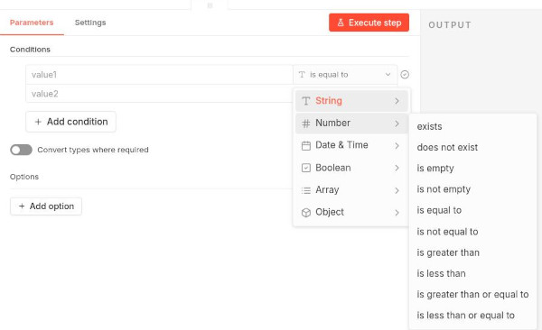
Operadors disponibles
Els operadors disponibles estaran en funció del tipus del valor amb el que treballem. Per exemple, si el valor és un string, els operadors disponibles seran diferents que si el valor és un número. A continuació teniu una taula amb els operadors més comuns:
| Operador | Descripció | Exemple |
|---|---|---|
| Equals | Exactament igual | nom equals Joan |
| Not Equals | Diferent | actiu not equals false |
| Contains | Conté el text | email contains @example |
| Not Contains | No conté | nom not contains test |
| Starts With | Comença amb | nom starts with Dr. |
| Ends With | Acaba amb | email ends with .com |
| Greater Than | Major que | edat > 18 |
| Less Than | Menor que | edat < 65 |
| Is Empty | Està buit | nom is empty |
| Is Not Empty | No està buit | email is not empty |
| Regex | Expressió regular | telefon matches ^\d{9}$ |
Condicions combinades
Podeu combinar condicions amb AND o OR:
( edat > 18 ) AND ( actiu = true )
( pais = "Espanya" ) OR ( pais = "Portugal" )
Integració amb altres serveis
Anem a veure alguns nodes que permeten connectar el nostre flux de treball amb serveis o aplicacions externes.
Hi ha moltíssimes opcions, així que en veurem unes quantes per a familiaritzar-nos amb el procés de connexió.
Connexió amb Kafka
Com ja sabeu, Apache Kafka és un broker de missatges distribuït dissenyat per a pipelines de dades en temps real d'alt rendiment. Tal com hem vist en altres unitats, Kafka té producers i consumers. Al igual que Node-RED, n8n també té nodes per treballar amb Kafka.
Anem a crear un flux senzill on enviem dades a Kafka i després les llegim.
Producer
Primer creem un node Edit Fields (set) per crear unes dades que enviarem a Kafka. Podem triar fer-ho directament en format JSON, però per poder utilitzar expressions per a la data triarem l'opció Manual mapping. Anem afegint camps especificant nom, tipus i valor. Per exemple:
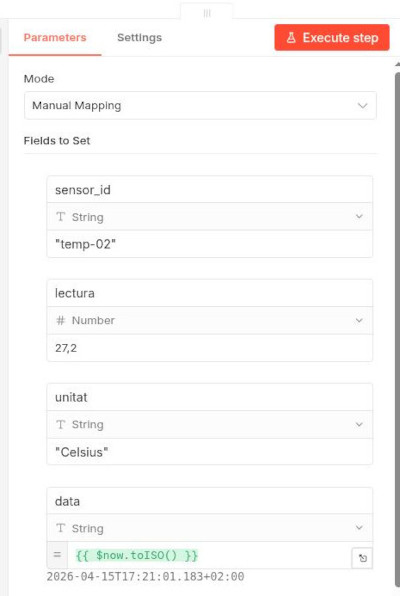
L'eixida del node set la podem enviar a un node Kafka que guarde la informació en un topic que anomenem, per exemple, my-topic.
El node Kafka permet enviar missatges a un topic. El posem a l'eixida del node set i el configurem amb les dades del nostre broker Kafka a l'apartat Credential. En el nostre cas, com estem dockeritzant Kafka, el broker serà broker:29092. Les opcions ssl i authentication les deixarem deshabilitades perquè el nostre Kafka no té seguretat habilitada.
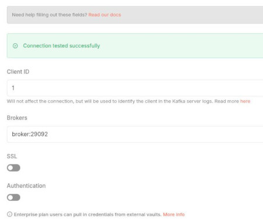
Quan ja creem la credencial només queda definir el nom del topic i activar l'opció Send Input Data. Això farà que el node Kafka envie les dades que li arriben del node set al topic especificat.
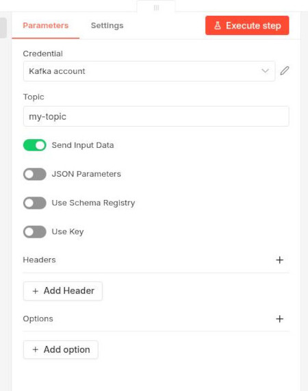
Consumer
Per a llegir la informació de Kafka utilitzem un node Kafka trigger. Utilitzem la mateixa credencial que abans i configurem el node amb les dades del topic que volem consumir. Tenim l'opció de llegir cada vegada des del principi del topic (des del primer missatge) o només els missatges nous. També tenim l'opció de parsejar directament els missatges a JSON.
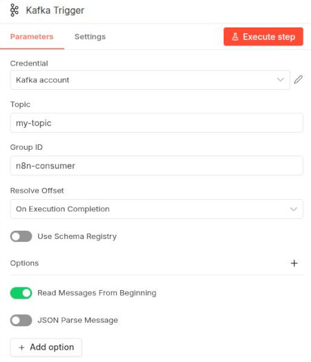
Si no funciona correctament el flux, proveu a posar el Kafka productor en un canvas i el Kafka consumidor (Kafka Trigger) en un altre. Publiqueu (botó Publish) els dos fluxos, i comproveu que s'estan executant tal com hem vist abans.
Un flux típic per processar dades de sensors podria ser el següent:
Schedule (cada 10s) → Code (generar dades) → Kafka (produce)
↓
Kafka (consume) → Code (validar) → IF (és vàlid?) → Elasticsearch (index)
↓
(no vàlid) → Set (marcar error) → Logstash (enviar a errors)
El flux senzill que hem fet quedaria així:
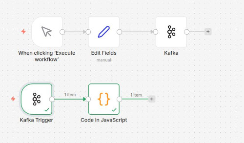
Torne a insistir: comproveu si vos funciona tot bé, i si no funciona correctament separeu els dos workflows en canves diferents i publiqueu-los (Botó Publish). A classe veurem un exemple més complet i comprovat.
Conexió amb Telegram
n8n té nodes per a moltes aplicacions externes. Per exemple, podem connectar amb Telegram per enviar missatges o rebre notificacions.
En el cas de Telegram, haurem de crear un bot a Telegram i obtenir el token d'API. Després, en n8n, crearem una credencial de tipus Telegram on introduirem el token per crear la connexió. També necessitarem saber el nostre chatID, cosa que podeu fer posant en el navegador la següent URL (substituïnt TOKEN pel token del vostre bot):
https://api.telegram.org/botTOKEN/getUpdates
Enviar missatges a Telegram
Una prova senzilla seria fer un webhook que envie missatges a Telegram cada vegada que rep una petició.
El node webhook quedaria així:
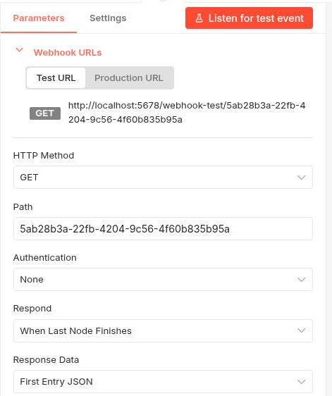
Connectem a l'eixida del webhook un node Telegram que quedaria així (se suposa que ha heu creat la credencial de Telegram amb el token del vostre bot i la URL https://api.telegram.org):
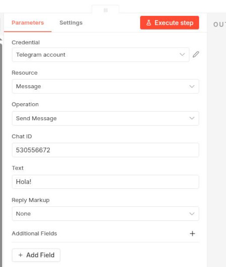
El flux complet queda així:
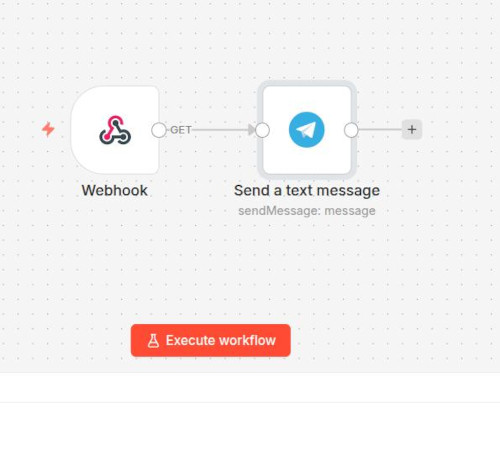
Ara si executem el flux, i des del navegador fem una petició a la URL del webhook, hauriem de rebre una notificació en el nostre bot de Telegram.
A classe farem una pràctica guiada (la tindreu en Aules) de com connectar Kafka i Telegram per rebre una notificació a Telegram quan arribe un missatge a Kafka que compleix una condició determinada.
HTTP Request Node
El node HTTP Request és un dels més versàtils, permetent fer peticions a qualsevol API REST (igual que el node HTTP Request de Node-RED).
Admet els mètodes habituals:
| Mètode | Ús |
|---|---|
| GET | Recuperar dades |
| POST | Crear recursos |
| PUT | Actualitzar recursos |
| PATCH | Modificació parcial |
| DELETE | Eliminar recursos |
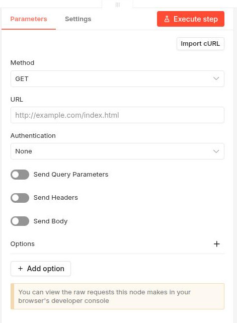
Com veieu, podem seleccionar el mètode HTTP corresponent, la URL, mètode d'autenticació si és necessari, i altres opcions com headers, query parameters, body, etc. Fent clic en el botó Add option podem accedir a més opcions de configuració.
Headers
Els headers proporcionen informació addicional a la petició:
| Header | Valor | Descripció |
|---|---|---|
| Content-Type | application/json | Format de les dades |
| Authorization | Bearer TOKEN | Token d'autenticació |
| Accept | application/json | Format esperat de resposta |
Query Parameters
Podeu afegir paràmetres de cerca a la URL:
URL: https://exemple.api.com
Query Parameters:
- name: limit
value: 10
- name: offset
value: 0
Resultat: https://exemple.api.com/usuaris?limit=10&offset=0
Teniu en compte que la URL
https://exemple.api.com/no existeix, és per posar un exemple.
Body
Per a peticions POST/PUT/PATCH, el cos de la petició conté les dades:
{
"nom": "Joan",
"email": "joan@example.com",
"edat": 30
}
Autenticació
El node HTTP Request suporta diversos tipus d'autenticació:
Basic Auth (Usuari i contrasenya):
Authentication: Basic Auth
User: usuari
Password: contrasenya
Header Auth (API Key):
Authentication: Header Auth
Name: X-API-Key
Value: la-vostra-clau-api
OAuth2:
Authentication: OAuth2 API
Client ID: ...
Client Secret: ...
Authorization URL: ...
Access Token URL: ...
Scope: read write
Nodes de control de flux
Anem a veure alguns nodes que modifiquen la lògica del flux.
IF Node
Bifurca el flux en dues branques: veritat (true) o fals (false).
En l'apartat Conditions podem anar afegint condicions una a una. Per exemple, podem afegir una condició que compare el valor d'un camp amb un valor fix, o que compare el valor d'un camp amb el valor d'un altre camp, etc.
Si posem més d'una condició, podem seleccionar si volem que es connecte amb les altres amb AND o amb OR.
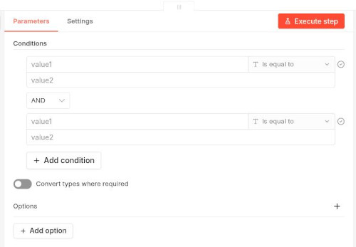
El node IF té una eixida per a la branca de veritat (true) i una altra per a la branca de fals (false). Així, podem connectar diferents nodes a cada branca segons el resultat de les condicions.
Si només volem comprovar que l'IF funciona, i mostrar les dades que trau com a output, podem afegir a les dues eixides nodes de tipus
No Operation(que no fan res) i així veurem les dades que passen per cada branca. Seria com els nodesDebugde Node-RED.
Switch Node
Bifurca el flux en múltiples branques segons unes regles que anirem afegint. Cada regla genera una eixida del node a la qual li podem connectar altres nodes.
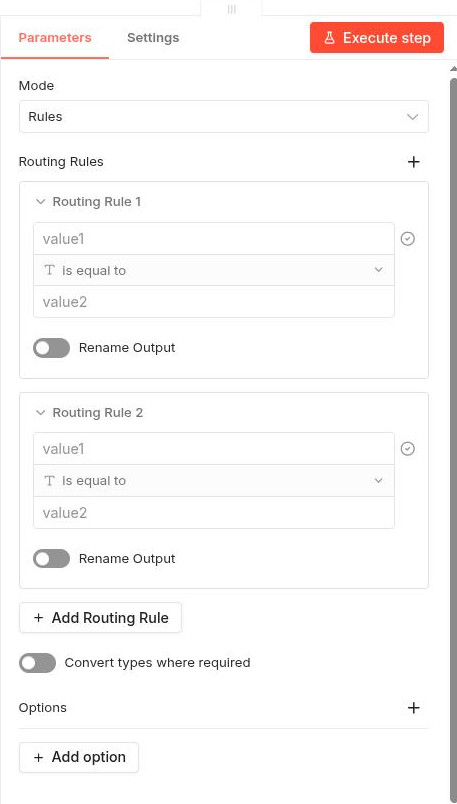
Loop Over Items Node
Permet iterar sobre cada element d'un array i executar un sub-flux per a cadascun.
Funcionament
- El node rep un array d'items
- Per a cada item, executa el sub-flux connectat
- Recull els resultats de cada iteració
- Retorna tots els resultats
Exemple
// Dades d'entrada (array)
[
{ json: { id: 1, nom: "Maria" } },
{ json: { id: 2, nom: "Joan" } },
{ json: { id: 3, nom: "Anna" } }
]
El node Loop processarà cada element individualment.
En principi no necessitarem nodes
Loopperquè molts nodes de n8n ja tenen l'opció, per defecte o a escollir per l'usuari, de processar cada ítem d'entrada de forma individual. Tot i això, en alguns casos pot ser útil per a iterar sobre arrays que arriben com a camp d'un item, o per a executar un sub-flux complex per a cada element.
Merge Node
El node Merge permet unir múltiples branques en una única execució. Té diferents modes:
| Mode | Descripció |
|---|---|
| Append | Junta tots els items seqüencialment |
| Combine | Combina tots els items en un únic item (útil si hi ha valors duplicats en les diferents branques) |
| SQL Query | Podem crear una query SQL per definir com se fusionaran les dades |
| Choose branch | Permet seleccionar una branca específica per a la sortida |
Branca A ─┐
├─→ Merge ─→ Sortida
Branca B ─┘
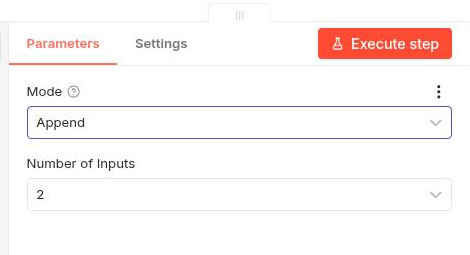
Dins d'un flux podríem tindre per exemple 2 nodes que generen dades de fonts diferents, i un merge per unir-les totes i poder-les processar conjuntament.
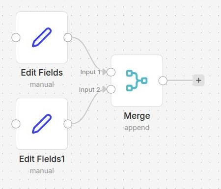
Wait Node
El node Wait permet pausar l'execució del flux durant un temps determinat.
Tipus de pausa
| Tipus | Descripció |
|---|---|
| After time initerval | Pausa durant un temps fix |
| At specified time | Pausa fins a una hora específica |
| On Webhook call | Pausa fins a rebre una crida webhook |
| On Form submitted | Pausa fins a rebre dades d'un formulari |
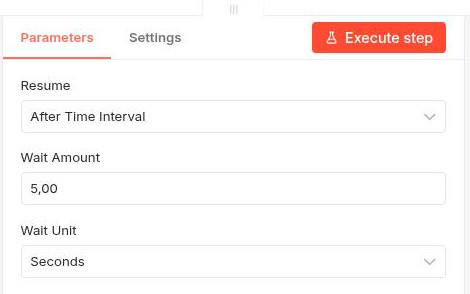
Credencials
Les credencials emmagatzemen de forma segura les claus d'API, tokens i contrasenyes necessàries per autenticar-se a serveis externs.
Podeu veure les credencials en cada node on s'utilitzen, amb el botó d'editar (icona de llapis) que hi ha a la dreta de l'apartat d'autenticació.
També podeu gestionar totes les credencials si aneu a la pantalla principal de n8n i feu clic a Credentials.
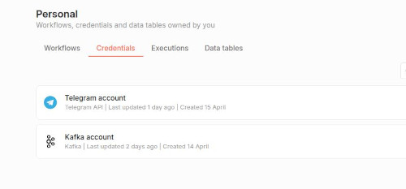
Crear credencials
- Quan configureu un node, feu clic a "Create New Credential"
- Seleccioneu el tipus d'autenticació
- Ompliu els camps requerits
- Feu clic a "Save"
Tipus d'autenticació
| Tipus | Utilització |
|---|---|
| API Key | Claus d'API simples |
| Basic Auth | Usuari i contrasenya |
| OAuth2 | Autenticació amb proveïdors OAuth |
| Header Auth | Clau en capçalera HTTP |
| Custom Auth | Autenticació personalitzada |
Bones pràctiques
- No compartiu credencials entre múltiples nodes si no és necessari
- Utilitzeu credencials compartides per a fluxes relacionats
- Roteu les claus periòdicament segons la política de seguretat
- No incloeu claus en expressions visibles als logs
- Verifiqueu l'accessibilitat de les credencials per projecte
Autenticació HTTP
Podeu configurar autenticació global per al node HTTP Request:
Basic Auth:
Credential for Basic Auth:
Name: usuari
Password: contrasenya
Bearer Token:
Credential for Header Auth:
Name: Authorization
Value: Bearer TOKEN_AQUÍ
Variables i Memòria
Workflow Variables
n8n permet definir i utilitzar variables de workflow per emmagatzemar dades temporals que es poden compartir entre nodes. Ara bé, eixa opció no està disponible en la versió autoinstal·lada gratuita.
Memory Nodes
Els nodes de memòria emmagatzemen dades entre execucions, essencials per a AI Agents amb context.
Si busqueu "Memory" en el cercador de nodes, no vos apareixeran els
Memory Nodesperquè només poden utilitzar-se des d'un node que interactue amb un agent.
Buffer Memory
Emmagatzema els últims N missatges de la conversa:
Window Size: 10
Útil per a chatbots que necessiten context recent.
Window Memory
Similar a Buffer, però amb finestres temporals:
Window Size: 10
Session Key: "{{ $json.session_id }}"
Vector Store Memory
Emmagatzema vectors per a cerques semàntiques (requereix integració amb base de dades vectorial com Pinecone o Weaviate).
Integració amb AI Agents
La memòria s'utilitza principalment amb AI Agents per mantindre context:
User Input → Chat Agent (amb Memory) → Response
↓
Buffer Memory
Configuració
- Afegiu el node Chat Agent
- Connecteu un node de memòria a l'entrada "Memory"
- Configureu la mida de la finestra
Exemple: Chatbot amb memòria
Agent: Conversational Agent
Memory: Buffer Memory (Window: 5)
Model: Claude
El bot recordarà els últims 5 missatges de la conversa.
Sub-workflows
Com a opcions més avançades, els fluxos de treball poden cridar-se uns a altres i passar-se informació. Això ho podem fer amb el node Execute Workflow.
També poden crear sub-workflows que són fluxos de treball més petits i especialitzats que poden ser reutilitzats des de diferents fluxos principals.
Eixos sub-workflows s'invoquen també amb el node Execute Workflow, però en lloc de seleccionar un workflow diferent, seleccionem el sub-workflow que hem creat.
Passar dades
Opcions de pas de dades:
| Opció | Descripció |
|---|---|
all |
Totes les dades de l'item actual |
none |
Sense dades |
select |
Camps específics |
Pas de camps específics:
Fields to Pass: nom, email, telefon
Rebre dades del sub-workflow
El workflow cridat retorna les seues dades d'eixida. Podeu accedir amb:
{{ $json.dades_retornades }}
Error Workflows
Els error workflows permeten gestionar errors de manera centralitzada.
Quan s'activa
Un error workflow s'activa quan:
- Un node llença un error
- S'utilitza el node Stop and Error
- S'utilitza el node Error Trigger
Crear un Error Workflow
- Creeu un nou workflow
- Afegiu el trigger Error Workflow
- Configura el workflow com a "Error Workflow" a les propietats
Exemple: Notificar errors
Error Trigger → Send Email (admin) → Log a Elasticsearch
Gestió d'errors en nodes individuals
Cada node té una eixida d'error (Error Output). Podeu:
- Connectar esta eixida a un node de notificació
- Reintentar l'operació
- Registrar l'error per anàlisi posterior
Connexió a bases de dades
També tenim diferents nodes en n8n per a connectar amb múltiples bases de dades. Anem a veure un parell d'exemples.
Connexió amb MySQL
Per a treballar amb MySQL/MariaDB, igual que amb qualsevol altre sistema gestor de bases de dades, necessitarem crear unes credencials.
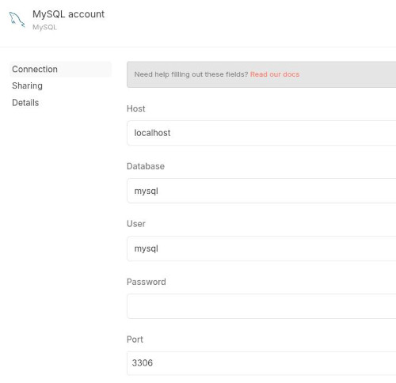
El node MySQL permet connectar i interactuar amb bases de dades MySQL/MariaDB. Quan seleccionem el node MySQL, ens demana quina operació volem executar.
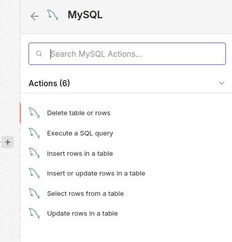
Després internament en el node ja podem especificar més clarament quines operacions volem realitzar.
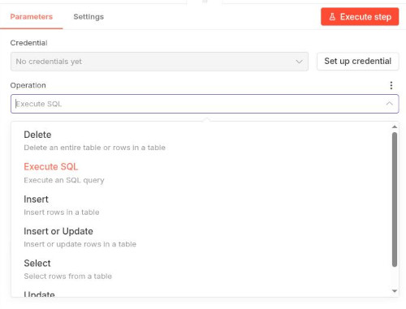
Connexió amb Elasticsearch
El node Elasticsearch permet indexar, cercar i gestionar documents a Elasticsearch.
Igual que amb MySQL, necessitarem unes credencials. També hem de triar una operació quan seleccionem el node.
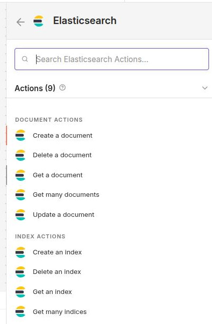
Una vegada tenim el node en el workflow, podem fer modificacions més específiques segons l'operació que hàgim triat.
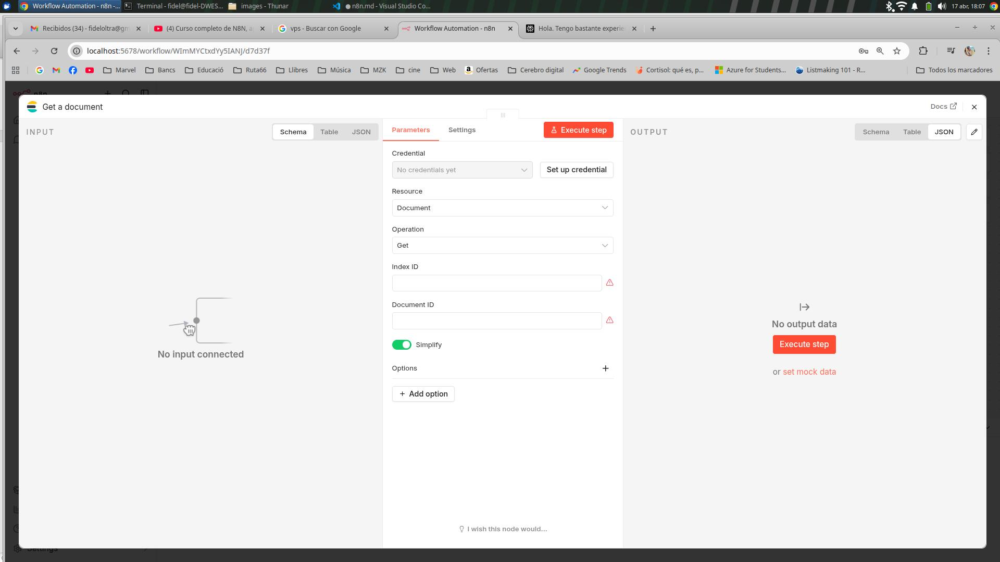
Veurem també algun exemple pràctic a classe on integrarem Elastic amb altres funcions de n8n.
M'HE QUEDAT ACÍ. FALTARIA TOTA LA PART D'INTEGRACIÓ AMB IA. TAMBÉ AFEGIR INTEGRACIÓ AMB GMAIL I ALGUNA EINA MÉS.
Integració amb IA
Una de les opcions més potents que té n8n és que ofereix nodes natius per treballar amb els principals models d'IA:
| Proveïdor | Model | Ús principal |
|---|---|---|
| Anthropic | Claude 3 | Conversació, anàlisi, classificació |
| OpenAI | GPT-4, DALL-E, Whisper | Generació text, imatges, àudio |
| Gemini | Multimodal, codi |
Claude Node
Permet utilitzar Claude 3 d'Anthropic per a tasques d'IA.
Figura 30.1: Node Claude configurat amb prompt i paràmetres
Credencials
- Creeu un compte a console.anthropic.com
- Obteniu la clau API
- Configureu-la a n8n
Configuració bàsica
Resource: Chat
Operation: Complete
Model: claude-3-5-sonnet-20241022
Messages:
- Role: system
Content: Eres un assistent que classifica missatges
- Role: user
Content: "{{ $json.missatge }}"
Paràmetres avançats
| Paràmetre | Descripció | Valor típic |
|---|---|---|
| Temperature | Creativitat (0-1) | 0.7 |
| Max Tokens | Màxim de tokens | 1024 |
| System Message | Instruccions de rol | Depèn de la tasca |
Output Format
Podeu demanar que l'eixida siga en format JSON:
Al final del teu missatge, inclou un JSON amb el format:
{"categoria": "incident|consulta|altre", "prioritat": "alta|mitjana|baixa"}
OpenAI Node
Models disponibles
| Model | Ús |
|---|---|
| gpt-4 | Millor qualitat, més lent |
| gpt-4-turbo | Qualitat amb velocitat |
| gpt-3.5-turbo | Ràpid, menor cost |
| dalle-3 | Generació d'imatges |
| whisper-1 | Transcripció d'àudio |
Exemple: Classificar text
Model: gpt-3.5-turbo
Messages:
- Role: system
Content: Classifica este email en una paraula (spam|normal)
- Role: user
Content: "{{ $json.email_body }}"
Exemple Pràctic
Workflow: Classificar incidències amb IA
Telegram Trigger → Claude (classificar) → IF (bifurcar) → ...
Pas 1: Trigger de Telegram
Configureu el bot per rebre missatges del grup de monitorització.
Pas 2: Classificar amb Claude
System: |
Ets un sistema de classificació d'incidències.
Classifica cada missatge com:
- "incident": Problema urgent que necessita atenció
- "consulta": Pregunta o sol·licitud d'informació
- "altre": Qualsevol altre missatge
Respon NOMÉS amb JSON:
{"categoria": "...", "explicacio": "..."}
User: {{ $json.text }}
Pas 3: Bifurcar segons classificació
IF: {{ $json.categoria }}
Conditions:
- Value: incident
Output: Output 1
- Value: consulta
Output: Output 2
- Value: altre
Output: Output 3
AI Agents amb LangChain
Conceptes fonamentals
Un AI Agent és un sistema que utilitza un model d'IA per prendre decisions i executar accions de manera autònoma. A diferència d'una simple crida a un model, un agent pot:
- Razonar sobre les dades rebudes
- Decidir quines accions fer
- Utilitzar eines (tools) per completar tasques
- Mantindre estat mitjançant memòria
Components d'un agent
┌─────────────┐
│ Agent │◀── Utilitza un model d'IA
└──────┬──────┘
│
├───▶ Tools (eines: cerques, càlculs, APIs)
│
└───▶ Memory (memòria: conversa, fets)
| Component | Descripció |
|---|---|
| Agent | Coordina tot, pren decisions |
| Model | El cervell: Claude, GPT-4, Gemini |
| Tools | Funcions que l'agent pot cridar |
| Memory | Emmagatzema estat i context |
Nodes d'Agents a n8n
n8n ofereix diversos nodes per crear agents:
Figura X.1: Nodes d'agent disponibles a n8n
| Node | Descripció |
|---|---|
| Chat Agent | Agent conversacional amb eines |
| Conversational Agent | Similar, orientat a chatbots |
| LangChain Agent | Agent complet amb configuració avançada |
Chat Agent
El node Chat Agent és l'opció més senzilla per crear agents conversacionals amb eines.
Figura X.2: Configuració del Chat Agent
Configuració bàsica
Model: Claude
System Message: Ets un assistent útil que ajuda amb tasques de dades.
Memory: Buffer Memory
Tools: Calculator, Wikipedia, HTTP Request
System Message
El missatge del sistema defineix el comportament de l'agent:
System Message: |
Ets un analista de dades expert.
Quan et demanen analitzar dades:
1. Verifica que les dades siguen completes
2. Identifica patrons i tendències
3. Proporciona recomanacions clares
Sempre sigues precís i cites les teues fonts.
Tools (Eines)
Les eines permeten a l'agent actuar sobre el món real.
Tools predefinides
| Tool | Funció |
|---|---|
| Calculator | Realitzar càlculs |
| Wikipedia | Cercar informació |
| HTTP Request | Fer peticions web |
| Search API | Cercar a serveis externs |
Crear una tool personalitzada
Podeu crear les vostres pròpies eines amb el Custom Tool node:
Tool Name: get_sensor_data
Description: Obté les dades actuals d'un sensor.
Input: sensor_id (string)
Output: dades del sensor en JSON
Exemple: Tool per consultar Elasticsearch
// Custom Tool: Elasticsearch Search
const fetch = require('node:https');
// Configuració de la tool
const toolConfig = {
name: "elasticsearch_search",
description: "Cerca documents a Elasticsearch. Input: query en JSON",
};
// Codi de la tool
async function execute(query) {
const response = await fetch('http://elasticsearch:9200/missatges/_search', {
method: 'POST',
headers: {
'Content-Type': 'application/json',
'Authorization': 'Basic ' + Buffer.from('elastic:tavernes').toString('base64')
},
body: JSON.stringify(query)
});
return await response.json();
}
Chain: Router
Un Chain permet encadenar múltiples passos de processament.
Exemple: Chain de classificació
User Input → Classifier → [Consultes | Incidents | Altres]
↓ ↓ ↓
Respond Processar Ignorar
Chain: Router Chain
Routes:
- Condition: "{{ $json.intent }}" equals "consulta"
Chain: Resposta Consulta
- Condition: "{{ $json.intent }}" equals "incident"
Chain: Processar Incident
- Default: Respondre genèric
Exemple: Agent cercador de dades
En este exemple, crearem un agent que pot cercar dades a Elasticsearch.
Figura X.3: Workflow de l'agent cercador
Configuració del workflow
Chat Trigger
↓
Chat Agent (amb Elasticsearch tool)
↓
Telegram (respondre)
System Message
System Message: |
Ets un assistent especialitzat en consultar bases de dades Elasticsearch.
Pots cercar incidències, missatges i altres dades indexades.
Quan l'usuari pregunta per dades:
1. Identifica què busca
2. Construeix la query adequada
3. Retorna els resultats de manera clara
Si no trobes res, indica'l honestament.
Tools configurades
- Elasticsearch Search: Cerca documents
- Calculator: Càlculs sobre dades
- Date Parser: Processar dates
Execució d'un agent
Quan executes un agent:
- L'usuari envia un missatge
- L'agent analitza el missatge
- Decideix quina tool usar (o cap)
- Executa la tool si cal
- Genera la resposta final
Figura X.4: Flux d'execució d'un agent
Logs de l'agent
Podeu veure el raonament de l'agent als logs:
🎯 Analitzant pregunta: "Quantes incidències hem tingut esta setmana?"
🤔 Decidint: Necessite consultar Elasticsearch
🔧 Executant tool: elasticsearch_search
📊 Resultats: 15 incidències
💬 Resposta: "Esta setmana hem tingut 15 incidències..."
Bones pràctiques amb agents
- System Message clar: Defineix bé el paper de l'agent
- Tools limitades: No sobrecarregueu amb eines innecessàries
- Memòria adequada: Trieu el tipus de memòria segons la tasca
- Fallback: Preveu respostes quan l'agent no sap què fer
- Testing: Proveu l'agent amb múltiples casos
Evitar bucle infinit
Max Iterations: 5
Timeout: 30 seconds
Gestió d'errors
On Error:
- Log error
- Return: "No he pogut completar la teua sol·licitud"
Integració amb Memòria
Els agents poden mantindre memòria de la conversa:
Conversació:
User: "Cercа incidents de dilluns"
Agent: "He trobat 5 incidències"
User: "I de dimarts?" (recorda el context anterior)
Agent: "He trobat 3 incidències de dimarts"
Configureu la memòria al Chat Agent:
Memory: Buffer Memory
Window Size: 10 # Últims 10 missatges
Session Key: "{{ $json.session_id }}"
Pràctica Guiada
Sistema de Monitorització Intelligent amb Telegram, IA i Elasticsearch
En esta pràctica construirem un sistema complet de monitorització que:
- Rep missatges d'un grup de Telegram
- Classifica automàticament si és una incidència, consulta o altre
- Indexa tots els missatges a Elasticsearch
- Envia alertes a Slack quan es detecta una incidència
- Respon automàticament a les consultes
Figura 32.1: Flux complet del Sistema de Monitorització Intelligent
Pas 1: Crear el Bot de Telegram
1.1 Obtenir el token del bot
- Obriu Telegram i busqueu @BotFather
- Envieu el comandament
/newbot - Indiqueu el nom del bot (p. ej.,
MonitoritzacioBot) - Indiqueu el nom d'usuari (ha d'acabar en
bot, p. ej.,monitoritzacio_test_bot) - BotFather us facilitarà un token com este:
1234567890:ABCdefGHIjklMNOpqrsTUVwxyz123456789
Important: Compartiu este token de manera segura i mai el publiqueu.
1.2 Configurar el bot
- Obriu una conversa amb el vostre bot
- Envieu qualsevol missatge (p. ej., "Hola")
- Això activa el webhook del bot
Pas 2: Configurar el Trigger de Telegram
2.1 Afegir el trigger
- Creeu un nou workflow
- Afegiu el node Telegram Trigger
- Seleccioneu Message com a Updates
2.2 Credencials
- Feu clic a "Create New Credential"
- Seleccioneu Telegram Api
- Introduïu el token del bot
2.3 Activar el workflow
- Deseu el workflow
- Activeu-lo amb el commutador de la cantonada superior dreta
Figura 32.2: Node Telegram Trigger configurat
Pas 3. Integrar Claude per Classificar
3.1 Afegir el node Claude
- Afegiu el node Claude després del trigger
- Connecteu-lo
3.2 Configurar credencials
- Creeu credencials d'Anthropic
- Obteniu la clau API a console.anthropic.com
3.3 Prompt de classificació
Model: claude-3-5-sonnet-20241022
Messages:
- Role: system
Content: |
Ets un sistema de classificació per a un canal de monitorització d'incidències informàtiques.
Classifica cada missatge en una d'estes categories:
- "incident": Error, fallada, problema urgent, incident de seguretat
- "consulta": Pregunta, sol·licitud d'informació, petició d'ajuda
- "altre": Tot la resta
Per a incidents, assessora la prioritat:
- "alta": Servei caigut, dades en perill
- "mitjana": Degradació del servei, problemes parcials
- "baixa": Incidències menors, optimitzacions
Respon EXACTAMENT en este format JSON, sense cap altre text:
{"categoria": "incident|consulta|altre", "prioritat": "alta|mitjana|baixa", "resum": "breu descripció"}
- Role: user
Content: "{{ $json.text }}"
3.4 Configurar eixida
Response Format: JSON
Pas 4: Parsejar la Resposta de Claude
4.1 Afegir node Code
Utilitzeu un node Code per extraure les dades del JSON:
// Obtenir la resposta de Claude
const resposta = $input.first().json.message.content;
// Buscar el JSON a la resposta
const jsonMatch = resposta.match(/\{[^}]+\}/);
if (jsonMatch) {
const dades = JSON.parse(jsonMatch[0]);
return {
json: {
text: $input.first().json.text,
chat_id: $input.first().json.chat.id,
categoria: dades.categoria,
prioritat: dades.prioritat,
resum: dades.resum,
data: new Date().toISOString()
}
};
} else {
// Si no es pot parsejar, marcar com altre
return {
json: {
text: $input.first().json.text,
chat_id: $input.first().json.chat.id,
categoria: "altre",
prioritat: "baixa",
resum: "No es pot classificar",
data: new Date().toISOString()
}
};
}
Pas 5: Crear Branca Condicional
5.1 Afegir node IF
Name: Classificar per categoria
Conditions:
- Value: {{ $json.categoria }}
Operation: equals
Compare Value: incident
5.2 Connectar eixides
- Output 1 (true): Branca per a incidents
- Output 2 (false): Continuar amb més condicions
5.3 Afegir segona condició
Després de la branca d'incidents, afegiu una altra condició per a consultes:
Conditions:
- Value: {{ $json.categoria }}
Operation: equals
Compare Value: consulta
Pas 6: Branca d'Incidències
6.1 Indexar a Elasticsearch
Afegiu un node Elasticsearch connectat a la branca d'incidents:
Operation: Index Document
Index: incidencies-{{ $now.toFormat('yyyy.MM.dd') }}
Document: "{{ $json }}"
6.2 Enviar alerta a Slack
- Afegiu el node Slack → Send Message
- Configureu les credencials de Slack
- Indiqueu el canal d'alertes
Channel: "#incidencies"
Message: |
🚨 *INCIDÈNCIA DETECTADA*
*Prioritat:* {{ $json.prioritat }}
*Resum:* {{ $json.resum }}
*Hora:* {{ $now.toFormat('HH:mm') }}
> {{ $json.text }}
6.3 Diagrama de la branca
IF (categoria=incident)
↓
Elasticsearch (indexar)
↓
Slack (alerta)
Pas 7: Branch de Consultes
Generar resposta amb IA
Utilitzeu un altre node Claude per generar una resposta:
System: |
Ets un assistent de suport tècnic amable i professional.
Respon a les consultes de manera clara i concisa.
Si no tens suficient informació, indica que cal més detalls.
Messages:
- Role: user
Content: "{{ $json.text }}"
7.2 Enviar resposta per Telegram
- Afegiu el node Telegram → Send Message
- Configureu:
Chat ID: {{ $json.chat_id }}
Message: "{{ $json.message.content }}"
Pas 8: Verificar a Kibana
8.1 Crear Índex Pattern
- Obriu Kibana a
http://localhost:5601 - Aneu a Stack Management → Index Patterns
- Feu clic a Create index pattern
- Introduïu
incidencies-* - Seleccioneu
datacom a camp de temps
8.2 Cercar incidències
- Aneu a Discover
- Cerqueu per categoria:
{
"query": {
"match": {
"categoria": "incident"
}
}
}
Figura 32.3: Dashboard de Kibana mostrant les incidències indexades
8.3 Crear visualitzacions en Kibana
- Creeu un Lens per veure incidències per prioritat
- Creeu un Markdown amb un resum
- Guardeu el dashboard
Flux Complet
El flux complet quedaria així:
Telegram Trigger
↓
Claude (classificar)
↓
Code (parsejar JSON)
↓
IF / Switch
/ | \
↓ ↓ ↓
Incidents Consultes Altre
↓ ↓ ↓
Elastic Claude Elasticsearch
↓ ↓ ↓
Slack Telegram (indexar)
(alerta) (resposta)
Figura 32.4: Flux complet amb tots els nodes
Pràctiques Modulars
Pràctica 1: Recollida de Dades de Formulari
Objectiu
Crear un sistema que reculla dades d'un formulari web i les emmagatzeme a Google Sheets.
Flux
Form Trigger → Set (formatejar) → Google Sheets (afegir fila)
Passos
- Form Trigger: Creeu un formulari amb:
- Nom (text)
- Email (email)
-
Missatge (textarea)
-
Set Node: Formategeu les dades
-
Google Sheets: Configureu el node per afegir una fila
Preguntes d'ampliació
- Com farieu per verificar si l'email ja existeix?
- Com enviarieu un email de confirmació?
Pràctica 2: Sincronització de Dades amb MySQL
Objectiu
Sincronitzar productes des d'una API externa a una base de dades MySQL local.
Flux
Schedule (cada hora) → HTTP Request (API) → Code (transformar) → MySQL (upsert)
Passos
-
Schedule: Cada hora
-
HTTP Request: Obtenir productes
yaml URL: https://api.exemple.com/productes Method: GET -
Code: Preparar per a upsert
javascript return $input.all().map(item => ({ json: { external_id: item.json.id, nom: item.json.name, preu: parseFloat(item.json.price), stock: item.json.quantity, actualitzat: new Date().toISOString() } })); -
MySQL: Upsert
sql INSERT INTO productes (external_id, nom, preu, stock, actualitzat) VALUES ("{{ $json.external_id }}", "{{ $json.nom }}", {{ $json.preu }}, {{ $json.stock }}, "{{ $json.actualitzat }}") ON DUPLICATE KEY UPDATE nom = VALUES(nom), preu = VALUES(preu), stock = VALUES(stock), actualitzat = VALUES(actualitzat)
Pràctica 3: Alertes de Monitorització de Web
Objectiu
Monitoritzar l'estat d'un lloc web i enviar alertes si cau.
Flux
Schedule (cada 5 min) → HTTP Request (health check) → IF (és healthy?) → Slack (alerta)
↓
(tot bé) → No Operation
Passos
-
Schedule: Cada 5 minuts
-
HTTP Request:
yaml URL: https://meullocweb.com/api/health Method: GET Timeout: 10000 -
IF: Verificar estat ```yaml Conditions:
- Value: {{ $json.status }} Operation: equals Compare Value: "ok" ```
-
Slack: Alertar
json { "text": "⚠️ El lloc web no respongui correctament", "attachments": [{ "color": "danger", "fields": [ {"title": "URL", "value": "https://meullocweb.com"}, {"title": "Estat", "value": "{{ $json.status }}"}, {"title": "Hora", "value": "{{ $now }}"} ] }] }
Pràctica 4: Processament de Fitxers amb FTP
Objectiu
Monitoritzar una carpeta FTP i processar automàticament els fitxers nous.
Flux
Schedule (cada 10 min) → FTP (llistfitxers) → Loop → Code (processar) → FTP (moure)
Passos
-
Schedule: Cada 10 minuts
-
FTP → List Files:
yaml Path: /entrada -
Loop Over Items: Per a cada fitxer
-
Code: Processar contingut ```javascript // Llegir i processar el fitxer const fitxer = $input.first().binary.data; const contingut = Buffer.from(fitxer, 'base64').toString('utf-8');
// Processar (exemple: llegir CSV) const linies = contingut.split('\n'); const dades = linies.slice(1).map(linia => { const [nom, email] = linia.split(','); return { json: { nom, email } }; });
return dades; ```
- FTP → Move File:
yaml Source Path: /entrada/{{ $json.filename }} Destination Path: /processats/{{ $json.filename }}
APÈNDIXS
A. Referència Ràpida de Nodes
Nodes Core Més Utilitzats
| Node | Funció | Ús |
|---|---|---|
| Manual Trigger | Iniciar manualment | Proves |
| Schedule Trigger | Planificar execucions | Tasques periòdiques |
| Webhook Trigger | Rebre peticions HTTP | APIs, integracions |
| HTTP Request | Fer peticions HTTP | APIs externes |
| Code | Executar JavaScript | Transformacions |
| Set | Assignar camps | Modificar dades |
| Filter | Filtrar elements | Condicionals |
| IF/Switch | Bifurcar flux | Lògica condicional |
| Merge | Unir branques | Combinar execucions |
| Loop Over Items | Iterar elements | Processament en bucle |
| Wait | Pausar execució | Esperar temps/condició |
Nodes de Base de Dades
| Node | Funció |
|---|---|
| MySQL | Bases de dades MySQL/MariaDB |
| PostgreSQL | Bases de dades PostgreSQL |
| MongoDB | Bases de dades MongoDB |
| Elasticsearch | Cercador/search engine |
| Redis | Cache i cues |
Nodes de Comunicació
| Node | Funció |
|---|---|
| Gmail | Enviar/rebre emails |
| Telegram | Bot de missatgeria |
| Slack | Notificacions a Slack |
| Discord | Notificacions a Discord |
B. Referència d'Expressions
Variables Globals
{{ $json.camp }} // Camp de l'item actual
{{ $input.all() }} // Tots els items
{{ $input.first() }} // Primer item
{{ $vars.variable }} // Variable de workflow
{{ $node "NomNode" }} // Dades d'un node
{{ $workflow.id }} // ID del workflow
{{ $execution.id }} // ID de l'execució
{{ $now }} // Data/hora actual
{{ $today }} // Data d'avui
Funcions de Data
{{ $now.toISO() }} // ISO 8601
{{ $now.toFormat('dd/MM/yyyy') }} // Format personalitzat
{{ $now.minus({ days: 7 }).toISO() }} // Fa 7 dies
{{ $now.plus({ hours: 2 }).toISO() }} // D'aquí 2 hores
Funcions de String
{{ $json.nom.toUpperCase() }} // Majúscules
{{ $json.nom.toLowerCase() }} // Minúscules
{{ $json.cadena.trim() }} // Sense espais
{{ $json.cadena.length }} // Longitud
{{ $json.email.split('@')[0] }} // Part abans de @
Operador Ternari
{{ $json.edat >= 18 ? 'Adult' : 'Menor' }}
C. Recursos
Documentació Oficial
- n8n.io - Web oficial
- docs.n8n.io - Documentació completa
- community.n8n.io - Fòrum de la comunitat
Nodes i Integracions
- n8n.io/integrations - Catàleg de nodes
- docs.n8n.io/integrations - Documentació de nodes
IA amb n8n
- docs.n8n.io/advanced-ai - Integració amb IA
- docs.n8n.io/advanced-ai/langchain/langchain-n8n - LangChain
Cursos i Tutorials
- n8n.io/learn - Tutorials oficials
- YouTube: n8n - Vídeos tutorials
Manual creat per al curs de Big Data Aplicat IES Jaume II El Just - Curs 2025-2026